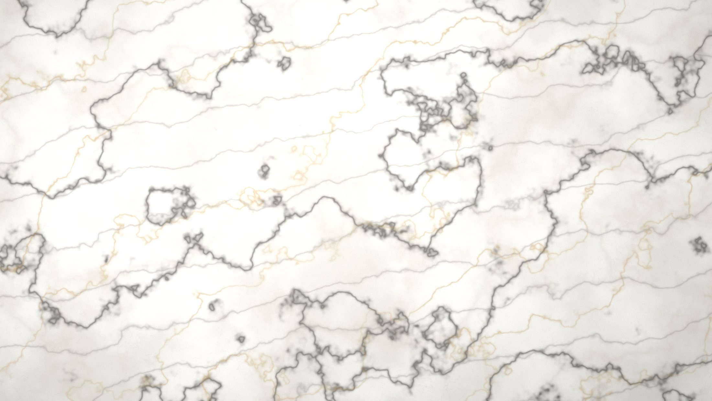
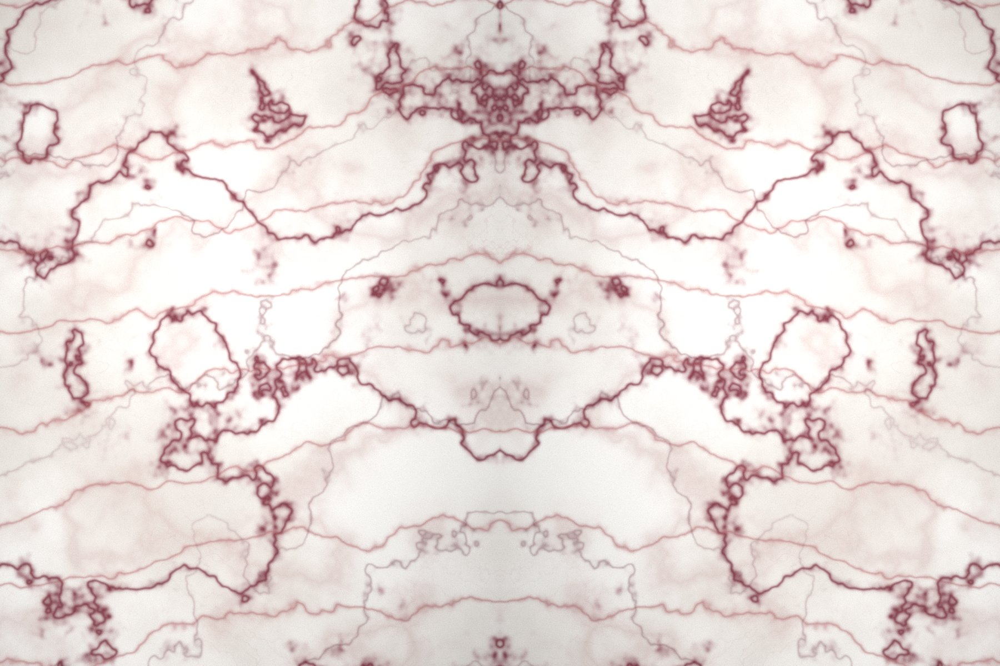

Sahil Rezidans
Choice of Winners
Doğanın en zarif imzası
20 yılı aşkın deneyimle, dünyanın dört bir yanından seçilmiş mermer ve doğal taşları yaşam alanlarınıza taşıyoruz.

Kitap Açılımı
Aynı bloktan ardışık kesilen iki plaka, duvarda birbirinin aynası olur.
Hakkımızda
Milyonlarca yılın
Milyonlarca yılın
tek seferlik eseri
Mermer, doğanın tekrar etmeyen imzasıdır. Aynı ocaktan çıkan iki plaka bile birbirinin aynısı değildir.
Winner Marble olarak 20 yılı aşkın süredir, doğal taşın en zarif ve dayanıklı biçimini yaşam alanlarına taşıyoruz. Lüks mermer konusunda uzmanlaşmış ekibimiz, dünyanın dört bir yanındaki ocaklardan seçtiği blokları titizlikle değerlendirir ve yalnızca onaylananları koleksiyonumuza dâhil eder.
Yurt içi ve yurt dışı müşterilerimize güvenilir, kaliteli ve estetik çözümler sunarak sektördeki konumumuzu koruyoruz.
0+Yıllık Deneyim
0+Ülkeye İhracat
0+Taş Çeşidi
0+Tamamlanan Proje
Koleksiyon
Her mekâna bir taş,
Her mekâna bir taş,
her taşa bir hikâye
Beyazın sükûnetinden oniksin ışığına kadar altı ayrı koleksiyon; hepsi tek tek seçilmiş bloklardan.
Neden Winner
Taşı seçmek işin yarısı,
Taşı seçmek işin yarısı,
doğru iş ortağı diğer yarısı
01
Seçkin Kaynak
Dünyanın dört bir yanındaki ocaklardan yalnızca renk ve doku tutarlılığı onaylanan bloklar koleksiyonumuza girer.
02
Uzman Ekip
Lüks mermer konusunda uzmanlaşmış ekibimiz, projenin taş seçiminden sevkiyatına kadar her aşamasında yanınızdadır.
03
Kalite Güvencesi
Her plaka; ton, kalınlık, yüzey ve ebat açısından tek tek denetlenir. Onaylanmayan plaka sevk edilmez.
04
Küresel Sevkiyat
Yurt içi ve yurt dışı müşterilerimize ihracat evrakları ve konteyner yüklemesi dâhil uçtan uca lojistik desteği sunuyoruz.
Uygulama Alanları
Taş, doğru yerde
Taş, doğru yerde
karakter kazanır
Üretim
Ocaktan şantiyeye
Ocaktan şantiyeye
yedi durak
01
Ocak Seçimi
Doğru taş, doğru ocakta başlar. Rezerv yapısı, renk tutarlılığı ve çatlak oranı incelenerek blok kaynağı belirlenir.
02
Blok Kesimi
Elmas tel testerelerle ocaktan çıkarılan bloklar, damar yönü ve verim gözetilerek numaralandırılır ve sınıflandırılır.
03
Plaka Kesimi
Bloklar, çok bıçaklı katrak ya da elmas testerelerle istenen kalınlıkta plakalara ayrılır. Damar yönü burada belirlenir.
04
Güçlendirme
Doğal boşluklar epoksi ile doldurulur, gerektiğinde arka yüzeye file takviyesi yapılarak plaka taşıma dayanımı artırılır.

“
Her blok bir kez kesilir. O yüzden doğru taşı seçmek, doğru anı seçmektir.
Winner Marble — Choice of Winners
Teklif Alın
Projeniz için doğru taşı birlikte seçelim
Numune talebi, plaka seçimi ve fiyat teklifi için ekibimize yazın; 24 saat içinde size dönüş yapalım.